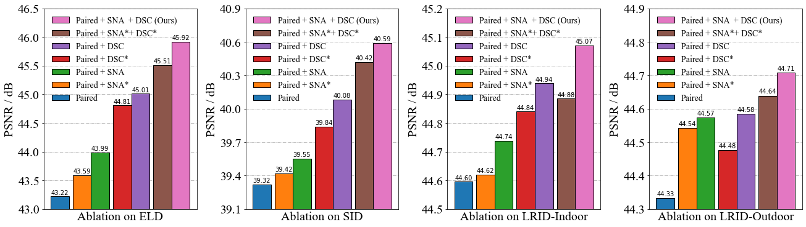

Performance
Comparison
Quantitative Results

Quantitative results (PSNR/SSIM) of different methods on the ELD dataset, SID dataset, and our LRID dataset. The red color indicates the best results and the blue color indicates the second-best results.
Click to get details
Public Datasets (ELD & SID)

Denoising models trained with synthetic data are unable to completely remove complicated real noise.
P-G is far from the real noise model, resulting in limited performance.
ELD considers more noise sources but still deviates from the real noise model, resulting in color bias and residual noise.
Although SFRN sampled real read noise, the patch-wise method cannot inherently address the mapping dilemma caused by dark shading, resulting in residual FPN.
The paired real data, despite containing real noise, is so fragile in learnability that the denoising model cannot learn the precise and accurate data mapping, resulting in blurry results and color bias.
By applying the learnability enhancement strategy to the paired real data, the denoising performance is significantly improved in both quantitative results and visual quality. Our work performs clean denoising results with the clearest texture and the most exact colors.
Our Dataset (LRID)

Our methods demonstrate superior denoising performance on our dataset, with the clearest texture and most exact colors. The performance aligns with our results on public datasets, indicating the high generalizability of our methods.
On our dataset, paired real data generally outperforms the best synthetic data (SFRN), which indicates that the data quality of synthetic data is inferior to that of paired real data on our dataset. This result differs from the findings of other noise modeling studies on public datasets. We attribute this discrepancy to the fact that our image acquisition protocol has addressed various data flaws. When data is well-annotated (i.e., the ground truth is clean and well-aligned) and sufficient in quantity, the learnability of data mapping is well-guaranteed. Under these conditions, the data quality of paired real data should surpass that of synthetic data. The observation indicates the superiority of our dataset.
Ablation Study
Quantitative Results

Ablation study of different learnability enhancement modules on the ELD dataset, SID dataset, and LRID Dataset. ``*" indicates that the module uses the implementation from the preliminary version.
Click to get details
Visual Results

Representative visual result comparison of different data schemes. ``*" indicates that the module uses the implementation from the preliminary version. Our full learnability enhancement strategy (Paired + SNA + DSC) promotes more exact color and clearer details compared to other baselines.
Overall, the best performance is achieved using the complete learnability enhancement strategy. SNA focuses on promoting mapping precision, while DSC focuses on promoting mapping precision. The combination of these two modules results in the best performance in both quantitative and visual quality. Benefiting from the development of SNA and DSC, our learnability enhancement strategy successfully refreshes the state-of-the-art in our preliminary work
Data Diversity of Our Dataset
Our ablation studies of noise diversity and scene diversity show that data quality improves with an increasing number of noisy images per scene and an increasing percentage of scenes.
The increase of data quality gradually saturates when the number of noisy images is close to our value, indicating that our dataset has sufficient noise diversity and scene diversity.